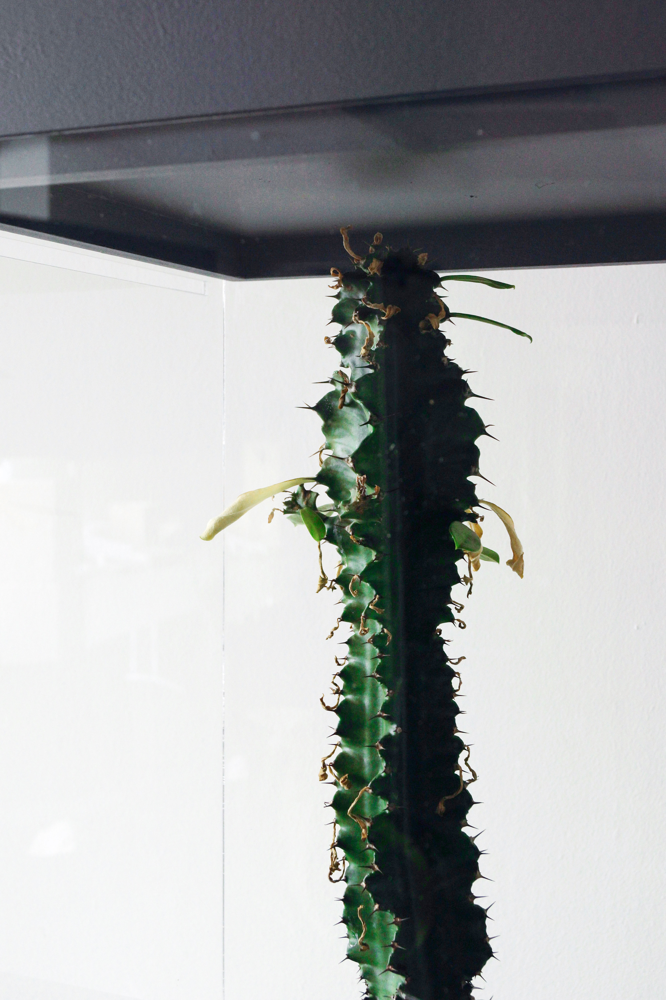
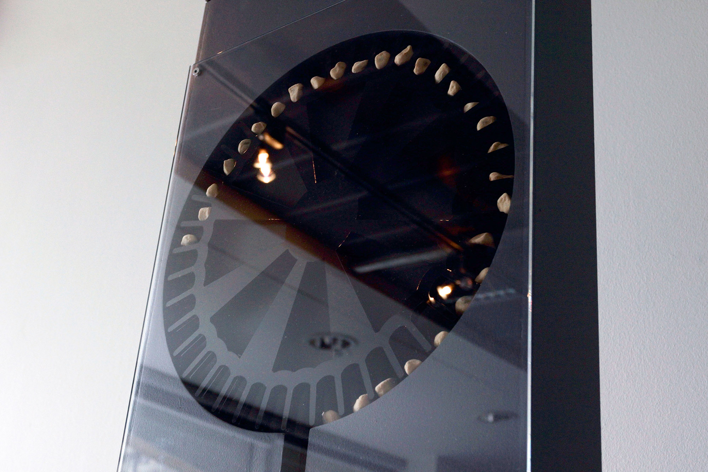
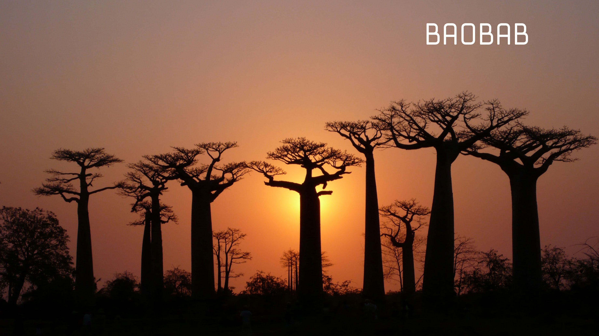

The installation is made of a plant enclosed in a plexiglass box, preventing anyone to be able to water it. A watering system is releasing a drop of water when statistically a miner dies either from an accident in a mine, a disease in consequence
of the working condition, or civil war financed by conflict minerals.
The viewer is placed in a helpless position: watching the plant perish because no one is dying, or being in good shape because people are suffering on the other side of the planet. It allows them to recall the feeling we encounter when realising
that our consumerism habits can have harmful consequences for either the environment or other human being, but we do not have other alternatives (apart from dropping out of the society). The plant has been carefully chosen. Its name is Euphorbia
Abyssinica, originating from Africa, from the Uphorbiaceae Family. It is used both to create medicine (the latex is used as a purgative and as a caustic on skin lesions) or as a poison to kill or commit suicide (Welham, n.d.). It conveys the
complexity of being good and bad at the same time: health and death. The water holds the same conflict: lifeblood of the planet, indispensable for all forms of life, symbolising here the death of human being.
On the same system and data as the PLANT, this installation is releasing a seeds. Visitors can take one (if there is any), put it in an envelope to bring it home. The envelope is stamped with brief explanations of the project, the link to access
the website and informations on how to take care of the plant.
Even if it is the same set of data used, this other ‘visualisation’ is complementary to the first one. When the plant suggests the state of being helpless as Western consumers in front of the condition of the miners in DRC, this one aims to encourage
long-term thinking on the situation. By having to plant the seed and then take care of it, the owner will have a constant reminder of the situation in his environment. It is meant to act as opposition to the short term thinking caused by the continuous
information flow experienced by Western consumers. Another layer of symbolism is in the act of planting the seed, embodying the data, that is to say, it is the symbol of the death of a human being. It recalls the act of burying the miner, aiming
to materialise the link between the new owner of the seed, a western consumers and the mining industry in DRC.
We made the choice of using baobab seeds because it is an African Landmark. It recalls the partial perspective we have of the continent, as in reality it is not present on all the African territory, and to be more precise, it is not a tree present
in DRC, but everywhere around. It is playing with our assumptions and beliefs, and at the same time because it is a symbol, it helps to create the connection with an issue in an African country. Another layer of the decision to choose baobab
seeds recalls the choice of the Euphorbia Abyssinica. It also has a dimension of being good and bad at the same time. It is considered by many Africans (the sources doesn’t give me the possibilities to be more precise) to be ‘The Tree of Life”.
In the other hand, the baobab tree in Antoine de Saint-Exupéry’s The Little Prince is the symbol of danger, having the tendency to invaded the asteroid, threatening the roses, the little prince adores. Literature annalists suggest that the trees
are the author’s visual metaphor for Nazism. The duality of this symbol recalls the subject of this project; wealth and health one one side, invasion and destruction on the other.


Although the condition of mine workers have improved in the past few years, and in particularly in South Africa where The South African mining industry has reported a significant drop in the number of fatalities and injuries, thanks to better-working
conditions (Brand SA, 2015). However, there is still major social problems associated with the activity, including high accident rates in the mines due to low safety, high rates of HIV infection, land conflicts caused by the presence of large
transient populations, crime, poor sanitation, and child labour, in order to extract minerals essential for the electronics industry (Boocock, 2002; Nutt, 2012; Poulsen, 2012; Smith & Carrington, 2015). Miners have also more health problems, which
decreased their life expectancy (increased frequency of cancer of the trachea, bronchus, lung, stomach, and liver, pulmonary tuberculosis, silicosis, pleural diseases, malaria, dengue fever; noise-induced, hearing loss; bacterial and viral diseases;
blood, skin, and musculoskeletal system diseases (Eisler, 2003)). The situation is particularly unacceptable in the DRC, where the extracted metals, called conflict minerals, are financing the armed conflicts in the area. The fourth main conflict
minerals are gold, cassiterite, coltan, and wolframite. The last three are sometimes referred to under the acronym 3T, a reference to the tin, tantalum, and tungsten metals derived from them (Heath, 2014). The working conditions are described
as slavery (Heath, 2014; Nutt, 2012; Poulsen, 2010). This testimony described the part of the life of the workers: “Sometimes people worked 24 hours out of 24, night and day, using head-mounted lamps — one team working days and one doing nights.
At the time there were no rules, and sometimes miners died of fatigue. There were also deaths because the pits were deep and there was flooding” (Heath, 2014). It is difficult to trace if electronic devices are conflict mineral-free or coming
from a mine where the working condition is acceptable, as the supply chain is opaque, travelling to Asia and elsewhere to be smelted into metals (Heath, 2014). Reporter Heath explains that “by shining a spotlight on electronics manufacturers’
supply chains, legislators are hoping to pressure companies to invest in removing conflict minerals from their products” (2014). It is moving in the right direction. Nevertheless, the problem is that there simply aren’t enough of these conflict-free
smelters to meet the needs of the world’s biggest computer makers, and there are still companies that currently have no idea whether their products are ‘conflict-free’ (Heath, 2014; Schiller, 2012; Schwartz, 2012). The report Taking Conflict Out
of Consumer Gadgets claims that “consumer activism will continue to serve as a motivator for corporate action that demonstrates the market potential for ethical products as well as an effective entry point for a national and international movement
dedicated to peace in Congo” (Lezhnev & Hellmuth, 2012). However, Heath argues that stopping sourcing minerals from the DRC and its neighbouring countries, expose another issue, as it would kill what could be a valuable part of these fragile countries’
economies (2014). What can be seen at first appearance as a solution, can bring to light other issues.
Sources Boocock, C. N. (2002). Environmental impacts of foreign direct investment in the mining sector in Sub-Saharan Africa. Foreign Direct Investment and the Environment, 19. Brand SA. (2015). Fatalities at South Africa’s mines drop. Retrieved 12/06/15,
from http://www.southafrica.info/news/business/mine-deaths-27115.htm#.VaOuJHiiKJT Eisler, R. (2003). Health risks of gold miners: a synoptic review. Environmental Geochemistry and Health, 25(3), 325-345. Heath, N. (2014). How conflict minerals
funded a war that killed millions, and why tech giants are finally cleaning up their act. Retrieved 01/06/15, from techrepublic.com/article/how-conflict-minerals-funded-a-war-that-killed-millions/ Lezhnev, S., & Hellmuth, A. (2012). Taking Conflict
Out of Consumer Gadgets. Report issued by The Enough Project, Washington, DC. http://www. enoughproject. org/files/CorporateRankings2012. pdf. Li & Fung Research Centre, 385-414. Nutt, S. (2012). Time to extract responsibility from Africa’s mining
industry. Retrieved 06/06/12, from http://www.theglobeandmail.com/globe-debate/time-to-extract-responsibility-from-africas-mining-industry/article4492385/ Poulsen, F. P. (2010). Blood in the Mobile. Poulsen, F. P. (2012). Children of the Congo
who risk their lives to supply our mobile phones. Retrieved 01/06/12, from http://www.theguardian.com/sustainable-business/blog/congo-child-labour-mobile-minerals Schiller, B. (2012). How To Stop Conflict Minerals From Killing Congo. Retrieved
20/06/15, from http://www.fastcoexist.com/1680266/how-to-stop-conflict-minerals-from-killing-congo Schwartz, A. (2012). How To Keep Conflict Minerals Out Of Your Daily Life (Sort Of). 20/06/15, from How To Keep Conflict Minerals Out Of Your Daily
Life (Sort Of) Smith, D., & Carrington, D. (2015). Dust, TB and HIV: the ugly face of mining in South Africa. Retrieved 01/06/15, from http://www.theguardian.com/environment/2015/may/26/dust-tb-hiv-ugly-face-mining-south-africa
In order to calculate at which rate the water will be released, we had to define and select which data to use. There are not any statistics reflecting the average number of deaths due to mining industry. The issue in DRC is too complex and factor in many
variables. The death can be the result of the armed conflict, infectious diseases or for example, as mentioned above HIV. At first appearance, there is no link between HIV and mines. However, this industry in DRC (and other countries in Africa
such as South Africa) is often connected to commercial sex, resulting in many infections for the workers, such as HIV, spreading the infection even outside the working site (Bollinger & Stover). To start, we set against the death rate of UK with
the one in DRC, allowing us to have a point of comparison. Surprisingly, according to United Nations Population Division, World Population Prospects, United Nations Statistical Division, and Population and Vital Statistics Report, they have a
very similar death rates (Central Intelligence Agency, 2014; Index Mundi, 2014a, 2014b; M. J. Morgan, 2009). However, this similarity coincides with the UK having an ageing population with 17.5% over 65 years old while in DRC only 2.6% of the
population is over the age of 65. The ratio of children under 14 years old in the UK is 17.3% while in DRC 43.1% are under 14 years old (Central Intelligence Agency, 2014; Index Mundi, 2014a, 2014b). The above comparison between UK and DRC suggests
the relationship of the existing conflicts, infectious diseases and mining industries that are all feeding to one another as the cause of young population and low life expectancy inside DRC. According to Poulsen, director of “Blood in the mobile”
“these resources have ended up fuelling the bloodiest war since WWII” (Poulsen, 2010). It is estimated that 5 million people have died since 1998 and 300.000 women have been raped (Heath, 2014; Poulsen, 2010; enough, n.d.). It is in average 870
persons per day who died in the past 17 years: 36 per hour, in connection to the mining industry in the country. Our installation aims to show the continuity of this issue over the 10 days of the ECA Master degree show 2015. The exhibition is
open from 11am to 5pm, that is to say 6h per day equivalent to the death of 216 persons. The watering system will release 11 drops of water during a day at randomly generated intervals. Each drop will represent 20 individuals dying in the Democratic
Republic of Congo.
Sources Bollinger, L., & Stover, J. The Economic Impact of AIDS in Congo (DRC) September 1999. The Futures Group International. Central Intelligence Agency. (2014). The World Factbook. Retrieved 08/07/15, from https://www.cia.gov/library/publications/the-world-factbook/rankorder/2066rank.html
enough. (n.d.). Eastern Congo. Retrieved 08/07/15, from http://www.enoughproject.org/conflicts/eastern_congo Heath, N. (2014). How conflict minerals funded a war that killed millions, and why tech giants are finally cleaning up their act. Retrieved
01/06/15, from techrepublic.com/article/how-conflict-minerals-funded-a-war-that-killed-millions/ Index Mundi. (2014a). Congo, Democratic Republic of the Demographics Profile 2014. Retrieved 08/07/15, from http://www.indexmundi.com/democratic_republic_of_the_congo/demographics_profile.html
Index Mundi. (2014b). United Kingdom Demographics Profile 2014. Retrieved 08/07/15, from http://www.indexmundi.com/united_kingdom/demographics_profile.html Morgan, M. J. (2009). DR Congo’s $24 trillion fortune. Retrieved 08/07/15, from http://www.thefreelibrary.com/DR+Congo%27s+$24+trillion+fortune.-a0193800184
Poulsen, F. P. (2010). Blood in the Mobile.